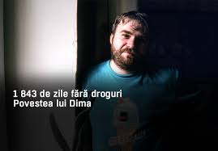
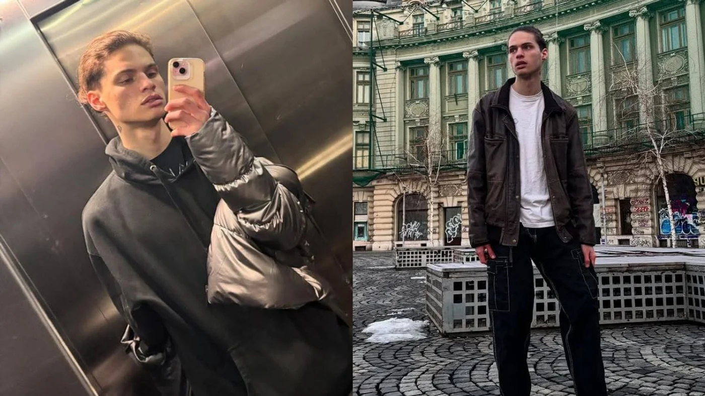
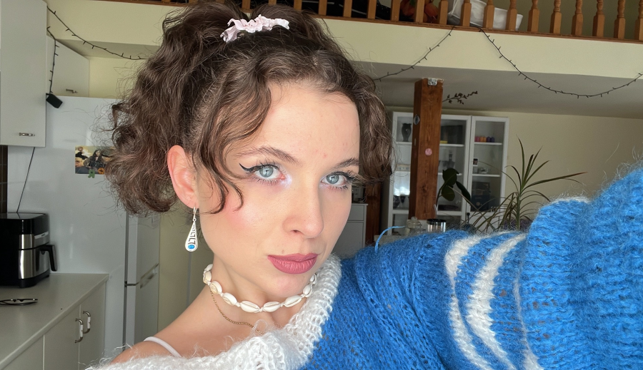

Dima a început să consume droguri la 18 ani, în timpul studiilor la București. A devenit dependent timp de 9 ani, consumând substanțe diverse, unele achiziționate chiar din farmacii. După o perioadă dificilă, a reușit să se recupereze și, la momentul relatării, avea 1.843 de zile fără droguri. Povestea sa este un exemplu de speranță și determinare pentru cei care luptă cu dependența.
Rareș Ion a fost un tânăr de 20 de ani din București, fost participant la emisiunea „Next Star”. În ciuda talentului său, a ajuns să consume droguri precum heroină, metadonă, tramadol și benzodiazepine. În aprilie 2025, a murit în urma unei supradoze, într-un garaj din Sectorul 2, în timp ce era filmat live pe TikTok de prietenul său, Tudor Duma, zis „Maru”.
O tânără din Cluj a consumat droguri timp de 7 ani, ajungând să aibă un consum zilnic. După ce a decis să își schimbe viața, a reușit să se recupereze și acum își împărtășește povestea pe TikTok, unde adună zeci de mii de vizualizări. Mărturiile sale oferă sprijin și inspirație celor care se confruntă cu probleme similare.
